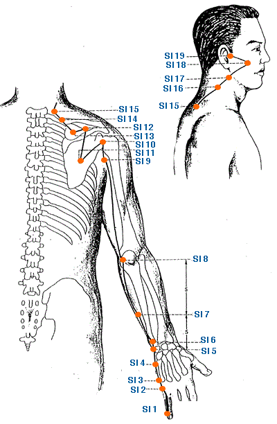

|

|
Meridian Point : SI-1
Location: .1 cun posterior to the corner of the nail on the ulnar side of the little finger.
English Name: Lesser Marsh
Pinyin Name: Shao Ze
Actions & Effect:
Breast disorders of any etiology, insufficient lactation, mastitis, breast abscess, cysts.
Jing Well Point, clear heat from the opposite end of the channel, for eye redness, earache, tinnitus, sore throat, stiff tongue.
Headache, dizziness, loss of consciousness.
Local point for problems of the little finger and the course of the channel - pain and/or weakness of the arm and/or shoulder.
Disease
Apoplexy, loss of consciousness, insufficient lactation, sore throat
Meridian Point : SI-2
Location: When a loose fist is made, at the ulnar end of the crease, distal to the 5th metacarpophalangeal joint at the junction of the red & white skin.
English Name: Front Valley
Pinyin Name: Qian Gu
Actions & Effect:
Local point for pain, swelling, numbness of the fingers. As the water point it will remove heat - febrile disease, hot palms, darker urine.
Clear heat from the opposite end of the channel, tinnitus, headache, sore throat, neck, ear and/or eye pain and/or swelling.
Disease
Numbness of the fingers, fever, headache, tinnitus, deafness
Meridian Point : SI-3
Location: When a loose fist is made, at the ulnar end of the distal palmar crease proximal to the 5th metacarpal phalangeal joint at the junction of the red & white skin.
English Name: Back Ravine
Pinyin Name: Hou Xi
Actions & Effect:
Master Point of the GV, effects entire pathway.
Pain in the scapula, arm a/or hand combine with local points.
Stiff neck, cervical strain/sprain, pain of the back or neck.
Occipital headaches, combine with local points.
Night sweats, combine with HT 6.
Clears heat and excess from the head, ears and eyes, eye redness, inflammation, visual dizziness, earache, tinnitus, sore throat.
Calms the spirit, anxiety, manic depression.
Disease
Pain and rigidity of the head and neck, redness, swelling and pain in the eyes, sore throat, mania, pain in the lumbar and sacrum, acute spasm in the finger, elbow and arm, epilepsy, deafness
Meridian Point : SI-4
Location: On the ulnar side of the palm in a depression between the base of the 5th metacarpal joint and the hamate bone.
English Name: Wrist Bone
Pinyin Name: Wan Gu
Actions & Effect:
Local point for shoulder, arm, hand and wrist problems particularly along the course of the meridian.
Useful point to treat problems with all fingers - contracture, pain, swelling, stiffness.
Headache, neck pain.
Jaundice.
Disease
Jaundice, cataract, tinnitus, deafness, pain in the lumbar and leg, contracture of the fingers, pain in the wrist, weakness to hold things in the hand, pain and rigidity of the head and neck
Meridian Point : SI-5
Location: On the ulnar end of the transverse wrist crease in a depression between the styloid process of the ulna and the triquetral bone.
English Name: Yang Valley
Pinyin Name: Yang Gu
Actions & Effect:
Local point for the hand and wrist.
Neck and shoulder pain and/or swelling.
Toothache, lockjaw.
Clears heat from the hearts - calms the spirit, manic behavior.
Disease
Neck pain, headache, redness, swelling and pain in the eyes, tinnitus, deafness, mania, epilepsy, pain of the hand and wrist
Meridian Point : SI-6
Location: Dorsal to the head of the ulna in the body cleft on the radial side of the styloid process, found with the palm facing the chest.
English Name: Nursing the Aged
Pinyin Name: Yang Lao
Actions & Effect:
Acute and Severe Pain, in the neck, shoulder a/or arms.
Useful point for treating elderly patients, deafness, tinnitus, failing vision, upper body/limb stiffness.
Overwork a/or overstrain, fatigue in the extremities.
Disease
Blurred vision, aching of the shoulder, back, elbow and arm, acute lumbar pain
Meridian Point : SI-7
Location: 5 cun proximal to the dorsal crease of the wrist on the SI 5 to SI 8 line.
English Name: Branch to the Correct
Pinyin Name: Zhin Zheng
Actions & Effect:
Local point for pain and/or strength/control issues in the elbow, arm, and fingers. May be helpful for weakness of all the limbs as well.
Stiff neck, headaches, vision issues - blurry, obstructed.
Useful with onset of exterior wind-heat conditions such as colds/flus that start with neck and/or back pain.
Calms the spirit - manic behavior, anxiety, panic attacks, fear.
Disease
Headache, dizziness, depressive, stiff neck, weakness of the joints, aching and dysfunction of the elbow, warts
Meridian Point : SI-8
Location: Between the olecranon process of the ulna and the medial epicondyle of the humerus, found with the elbow flexed.
English Name: Small Sea
Pinyin Name: Xiao Hai
Actions & Effect:
Elbow problems, swelling, trembling, pain, numbness, weakness - channel issues with excess wind a/or heat.
Submandibular region swelling or pain, toothache, gums, cheek, neck, scapula, axilla.
Epilepsy
Disease
Pain in the elbow and arm, epilepsy
Meridian Point : SI-9
Location: 1 cun above the posterior end of the axillary fold, posterior and inferior to the shoulder joint, found with the arm adducted.
English Name: True Shoulder
Pinyin Name: Jian Zhen
Actions & Effect:
Local point for shoulder and arm pain and/or movement/control issues. Motor control issues of the hand.
Wind-heat invasion - chills and fever from the common cold.
Tinnitus, deafness.
Disease
Pain in the shoulder and arm, tinnitus, deafness
Meridian Point : SI-10
Location: With the arm abducted, directly above SI 9 in a depression inferior to the scapular spine.
English Name: Upper Arm Shu
Pinyin Name: Nao Shu
Actions & Effect:
Local point for shoulder and upper arm pain, swelling and/or weakness.
Wind-heat, wind-cold - chills and fever.
Disease
Pain in the shoulder and arm
Meridian Point : SI-11
Location: On the scapula in a depression at the center of the infrascapular fossa, found at the junction of the upper and middle third between the lower scapular spine and the inferior angle of the scapula.
English Name: Celestial Gathering
Pinyin Name: Tian Zong
Actions & Effect:
Breast problems, mastitis, insufficient lactation, breast pain.
Emotional issues, anxiety that presents with asthma, expands and relaxes the chest, asthma generally.
Local point for channel pain within the shoulder, scapula region, elbow, arm, face and jaw.
Disease
Pain in the shoulder and arm, asthma, cough, brest abscess
Meridian Point : SI-12
Location: Directly above SI 11 in the center of the suprascapular fossa, found in a depression when the arm is lifted.
English Name: Grasping the Wind
Pinyin Name: Bing Feng
Actions & Effect:
Local point for shoulder, scapula and/or arm pain, numbness, weakness along the course of the channel.
Disease
Pain in the shoulder and scapular region, aching and numbness of the upper extremities
Meridian Point : SI-13
Location: At the medial extremity of the suprascapular fossa midway between SI 10 and the spinous process of T2.
English Name: Crooked Wall
Pinyin Name: Qu Yuan
Actions & Effect:
Local point for shoulder and/or scapular region pain, weakness and/or stiffness. Useful for chronic shoulder problems.
Disease
Pain in the shoulder and scapular region
Meridian Point : SI-14
Location: 3 cun lateral to the spinous process of T1 (GV 13).
English Name: Outer Shoulder Shu
Pinyin Name: Jian Wai Shu
Actions & Effect:
Local point for shoulder and scapular region pain.
Neck pain and/or rotation issues, and pain of the upper back.
Disease
Pain or stiffness in the shoulder and back, cough, asthma
Meridian Point : SI-15
Location: 2 cun lateral to the spinous process of C7 (GV 14).
English Name: Central Shoulder Shu
Pinyin Name: Jian Zhong Shu
Actions & Effect:
Asthma, cough, coughing up of blood (hemoptysis).
Local point for shoulder, neck and/or upper back pain.
Disease
Cough, asthma, pain in the shoulder and back
Meridian Point : SI-16
Location: On the lateral side of the neck, posterior to the SCM and LI 18, level with the Adam's apple.
English Name: Celestial Windows
Pinyin Name: Tian Chuang
Actions & Effect:
Both SI 16 & SI 17 are Window of the Sky Points and are useful for throat distention, swelling, goiters, lumps in neck a/or throat, voice issues.
Ear issues - tinnitus, deafness, pain.
Local point for neck and/or shoulder problems.
Tong Ren/Tam Healing System: Used to effect the circulation within the vertebral artery and the occipital artery. Useful for occipital headache, alzheimer's, brain tumors, dyslexia, MS, and many brain issues related to circulation. Often used with Tian Dong as a starting point.
Falls into the category of Window of the Sky points within the Tam Healing system.
Disease
Sore throat, sudden loss of voice, pain and rigidity of the neck, tinnitus, deafness
Meridian Point : SI-17
Location: Posterior to the angle of the mandible in a depression on the anterior border of the SCM.
English Name: Celestial Countenance
Pinyin Name: Tian Rong
Actions & Effect:
Both SI 16 & SI 17 are Window of the Sky Points and are useful for throat distention, swelling, goiters, lumps in neck a/or throat.
Chest oppression, wheezing, cough, asthma.
Ear issues - tinnitus, deafness.
Tong Ren/Tam Healing System: Used to effect the circulation to the brain, and the facial nerves.
Useful for facial issues such as TMJ, gum problems, etc. Also used with headaches, hearing issues, dizziness and/or high blood pressure.
Falls into the category of Window of the Sky points within the Tam Healing system.
Disease
Tinnitus, deafness, sore throat, swelling and pain of the neck
Meridian Point : SI-18
Location: Directly below the outer canthus of the eye in a depression on the lower border of the zygoma.
English Name: Cheek Bone Hole
Pinyin Name: Quan Liao
Actions & Effect:
Local point for facial disorders, Bell's palsy, trigeminal neuralgia, spasm, twitching of the eyelids, facial muscles, etc..
Upper jaw tootache.
Yellowing of the sclera.
Disease
Twitching of eyelids, facial paralysis, tooth ache, swelling of the cheek
Meridian Point : SI-19
Location: Anterior to the tragus and posterior to the condyloid process of the mandible, in a depression formed when the mouth is opened.
English Name: Auditory Palace
Pinyin Name: Ting Gong
Actions & Effect:
Ear problems of any etiology, inflammation, deafness, tinnitus, hearing loss.
TMJ, toothache.
Calms the spirit - manic behavior, epilepsy, sensation of pressure below the heart.
Disease
Tinnitus, deafness, otorrhea (discharge from the ear), Toothache, dysfunction of the maxillary joint
|